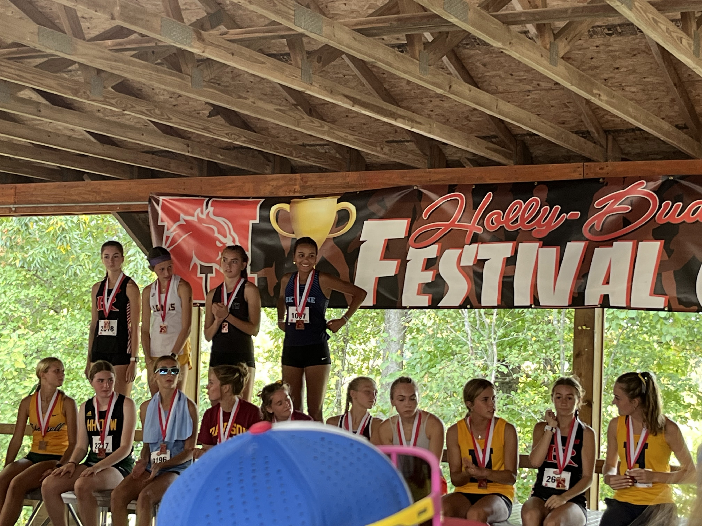
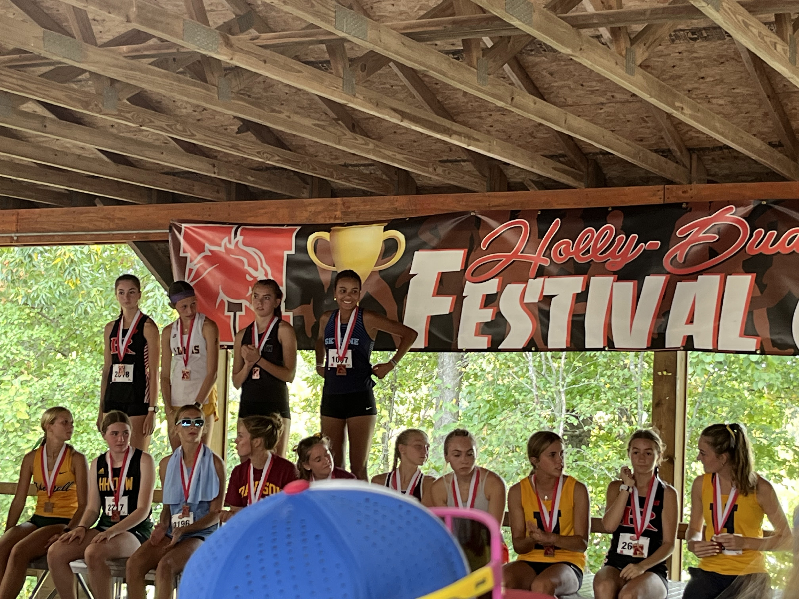
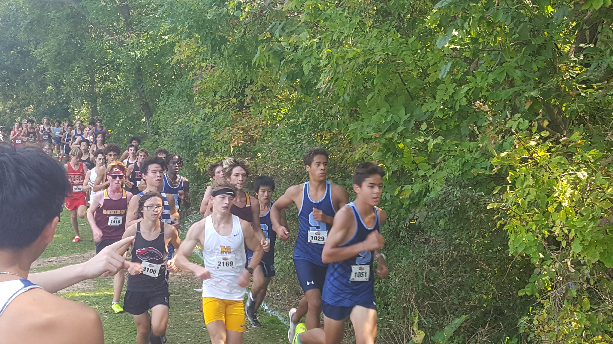
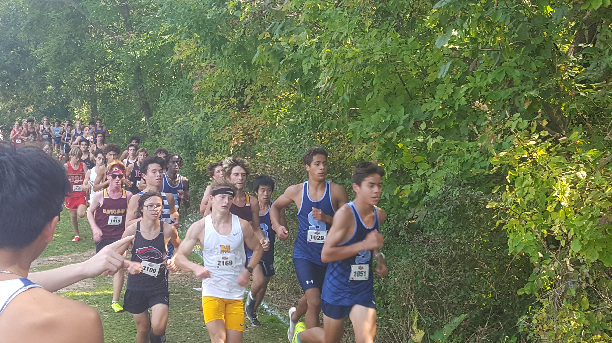
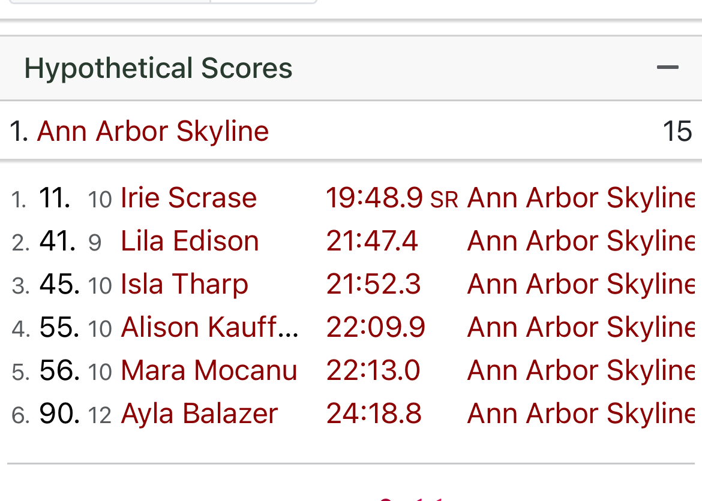
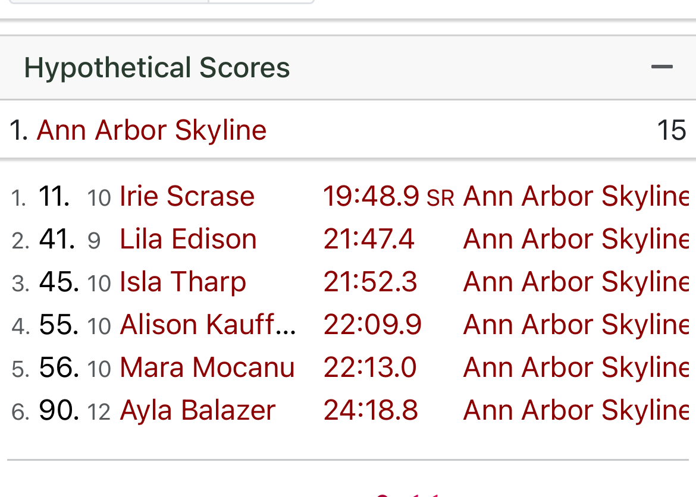
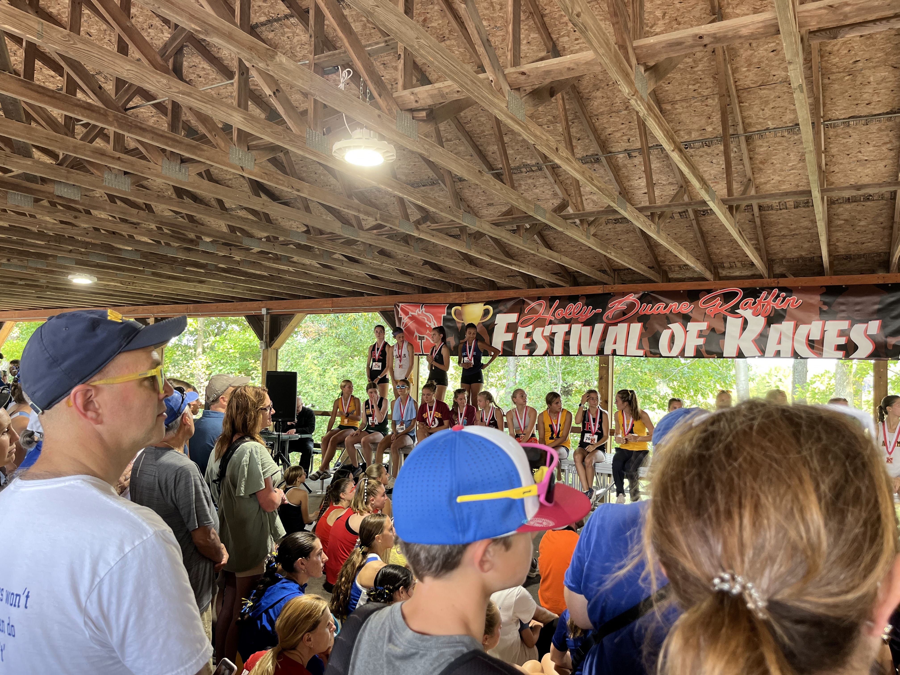
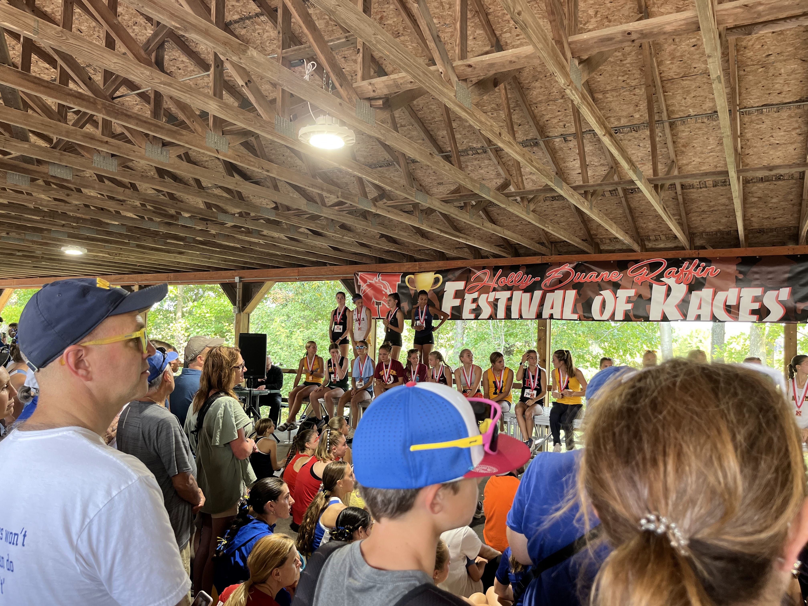

56th Holly-Duane Raffin Festival of Races Mens 5000 Meters D1 JV Boys
Sat Sep 14 2024
Race Summary
The Ann Arbor Skyline JV Boys team delivered a strong performance at the 56th Holly-Duane Raffin Festival of Races, finishing in 3rd place overall with 72 points. The team’s impressive consistency and depth were on full display during the 5,000-meter race.
Freshman Oskar MacArthur led the Skyline pack, finishing in 17:57.7, followed closely by freshman Martin Gehrke at 17:58.8. Both runners broke the 18-minute barrier, setting the pace for the team.
Sophomore Dylan Hanley clocked in at 18:13.9, with junior Parker Razelun finishing in 18:21.8. Rounding out the top five for Skyline, sophomore Santiago Valenzuela crossed the line at 18:56.7, capping off a solid team performance.
The close grouping of Skyline’s top runners helped secure their strong placement, setting the stage for a promising season ahead.
Team Results
| Place | Team | Score |
|---|---|---|
| 1 | Holly | 43 |
| 2 | Salem | 52 |
| 3 | Midland | 72 |
| 4 | Ann Arbor Skyline | 128 |
| 5 | Troy | 181 |
| 6 | Dexter | 212 |
| 7 | Utica Ford | 230 |
| 8 | Canton | 255 |
| 9 | Detroit Catholic Central | 270 |
| 10 | Midland Dow | 297 |
| 11 | Rochester Adams | 298 |
| 12 | Oxford | 321 |
| 13 | Howell | 340 |
| 14 | Plymouth | 399 |
| 15 | Romeo | 400 |
| 16 | Hartland | 476 |
| 17 | Livonia Stevenson | 506 |
| 18 | Utica Eisenhower | 527 |
| 19 | Davison | 580 |
| 20 | Lake Orion | 581 |
Individual Results
Oskar MacArthur
Place
6
Time
17:57.7
Grade
9
Martin Gehrke
Place
7
Time
17:58.8
Grade
9
Dylan Hanley
Place
13
Time
18:13.9
Grade
10
Parker Razelun
Place
15
Time
18:21.8
Grade
12
Santiago Valenzuela
Place
31
Time
18:56.7
Grade
10
Raphael Fournier
Place
32
Time
18:57.1
Grade
10
Roman Stilwell
Place
33
Time
18:57.1
Grade
9
Henry Strait
Place
41
Time
19:08.0
Grade
12
Elliot Daley
Place
42
Time
19:12.0
Grade
9
Marlowe Hartnett
Place
43
Time
19:14.5
Grade
11
Jackson Cichewicz
Place
46
Time
19:19.5
Grade
12
Micah Winchell
Place
74
Time
19:52.1
Grade
12
Emmett Strait
Place
95
Time
20:13.1
Grade
9
Phylip Elliott
Place
115
Time
20:39.6
Grade
10
Leo Chi
Place
116
Time
20:40.6
Grade
9
Ethan Miller
Place
211
Time
22:21.9
Grade
9
Jude Shafer
Place
255
Time
23:14.4
Grade
9
Cole Harms
Place
321
Time
25:04.0
Grade
9
Caspian Ruiz
Place
372
Time
29:04.1
Grade
9
Gallery


 



 



 

 
